Zensar Technologies
User Experience Lead
Pune District, Maharashtra, India
Senior User Experience Designer
Pune, Maharashtra, India
For teams, companies, and ideas that deserve to exist.
I lead design at Zensar after roles at LTI, GeoSpoc, and iAuro. I’m based in Pune with my wife and our son, and I’m drawn to work that brings craft and utility together.
Pune District, Maharashtra, India
Pune, Maharashtra, India
Pune Area, India
Pune Area, India
Studied human behavior, personality, emotions, mental health, psychological assessment, and research methods. Took part in seminars, group discussions, presentations, research assignments, and peer learning.
Through an internship, developed practical skills in client interaction, rapport building, behavioral observation, and case documentation, with an emphasis on empathy and sensitivity.
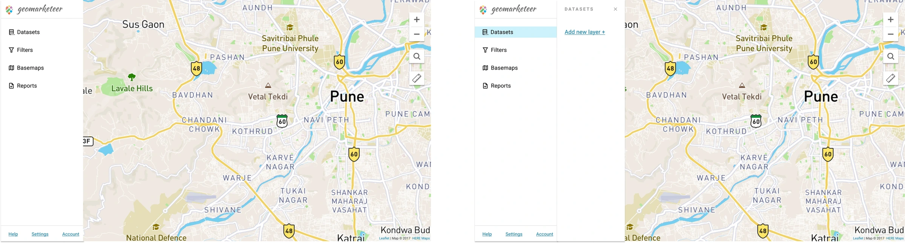
GeoMarketeerGeoSpoc Site selection for retail businessesHelping retail businesses investigate a place before investing in it.
We carried forward a left sidebar because it had room for clear labels and detailed filters. The dataset panel opened beside the map, so people could choose what to investigate and still see the place they were working with.
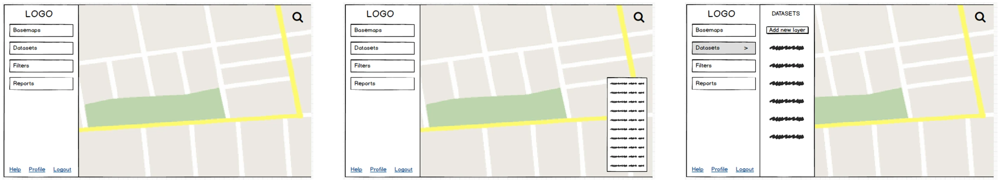
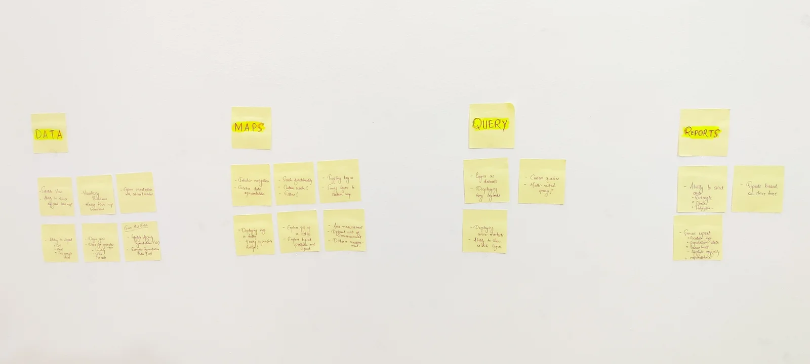
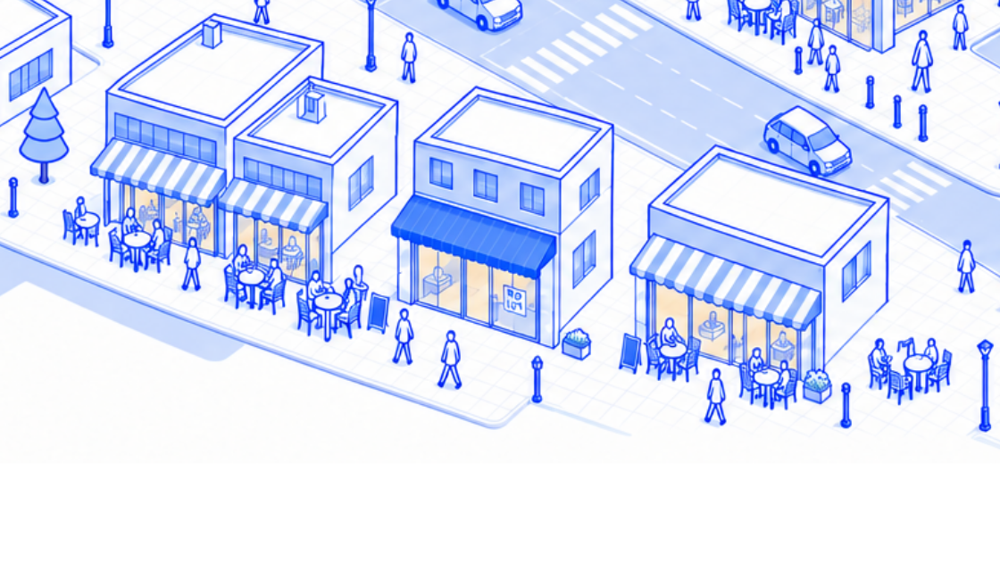
Restoring consistency across an enterprise analytics platform.
Six interactive layout studies for GeoMarketeer.
Layout study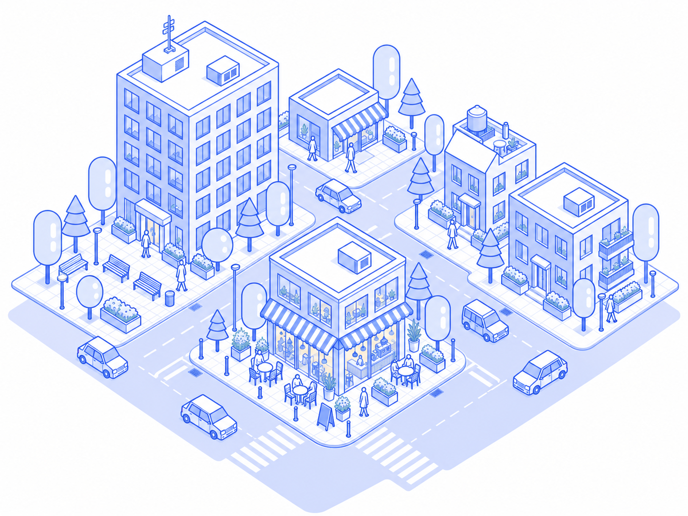
Explore the café, shops, and streets from the GeoMarketeer story.
Neighborhood study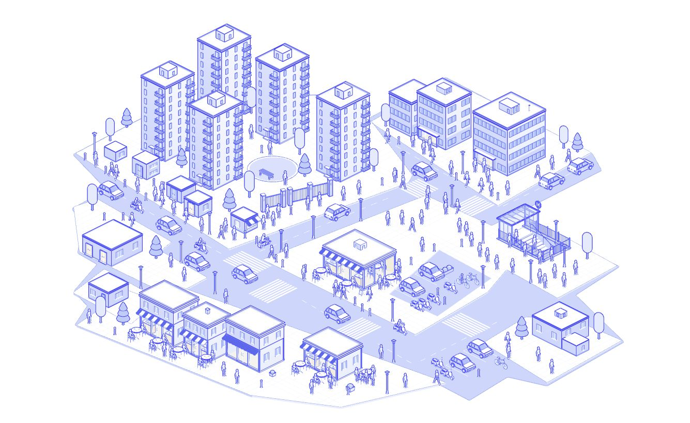
A browser for the building blocks behind the city illustration.
Illustration toolkit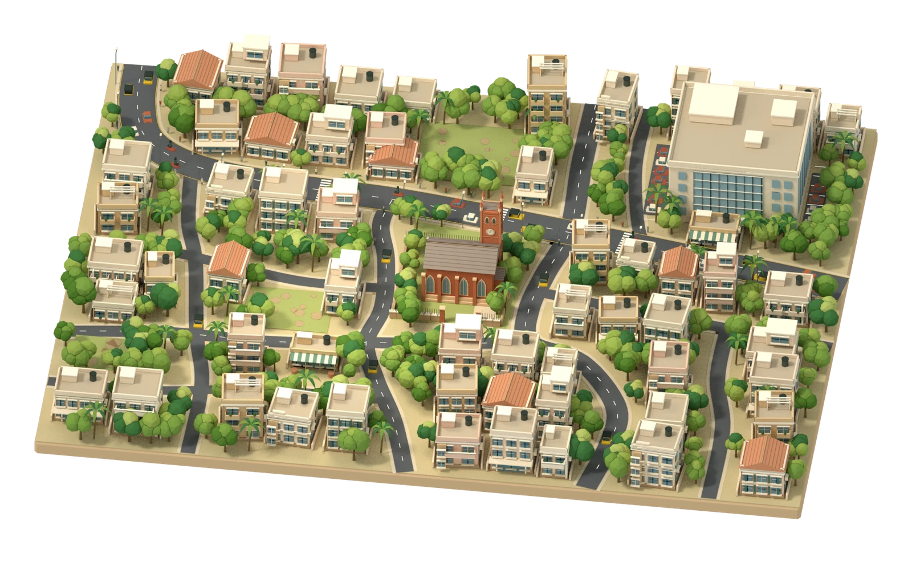
An illustrated reconstruction of a neighborhood, from its landmarks to its street traffic.
Cityscape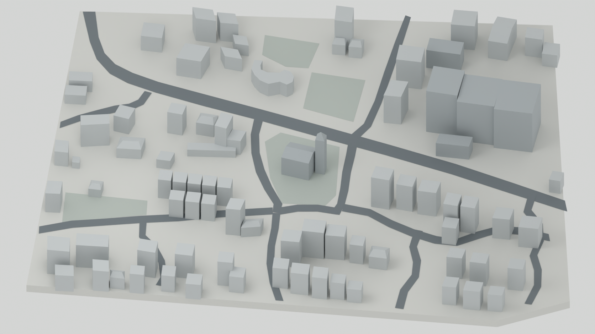
Exploring how one component kit comes together at the scale of a city block.
Component library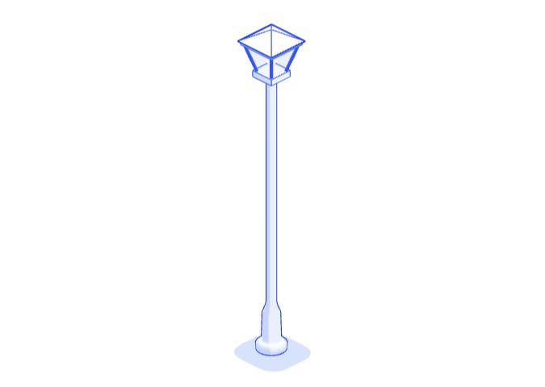
A reusable set of lamps, benches, bollards, and other street furniture.
3D asset study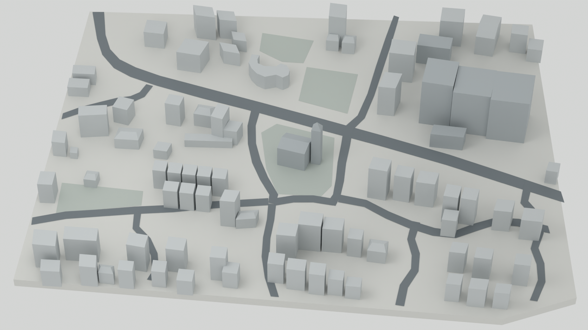
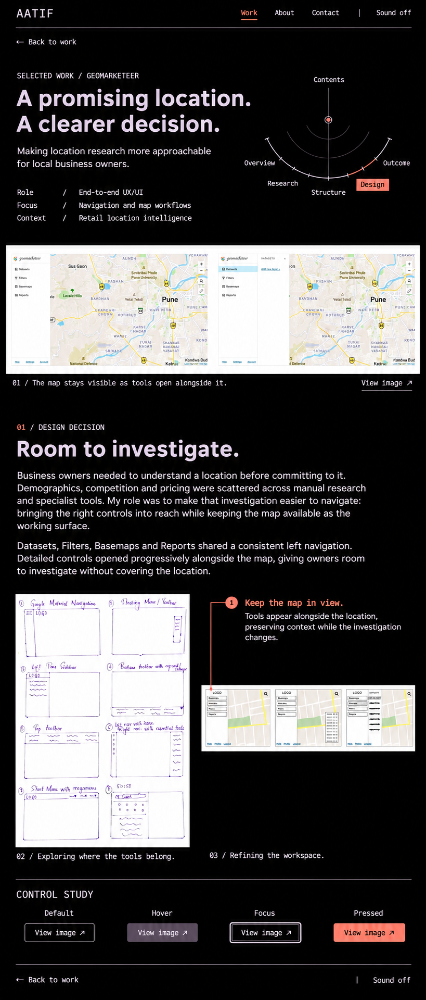
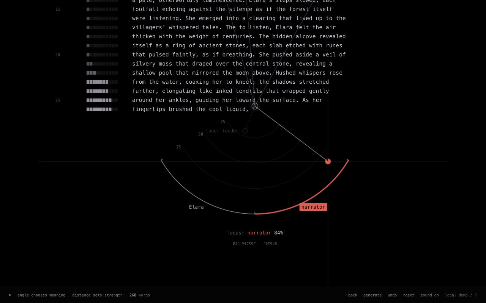
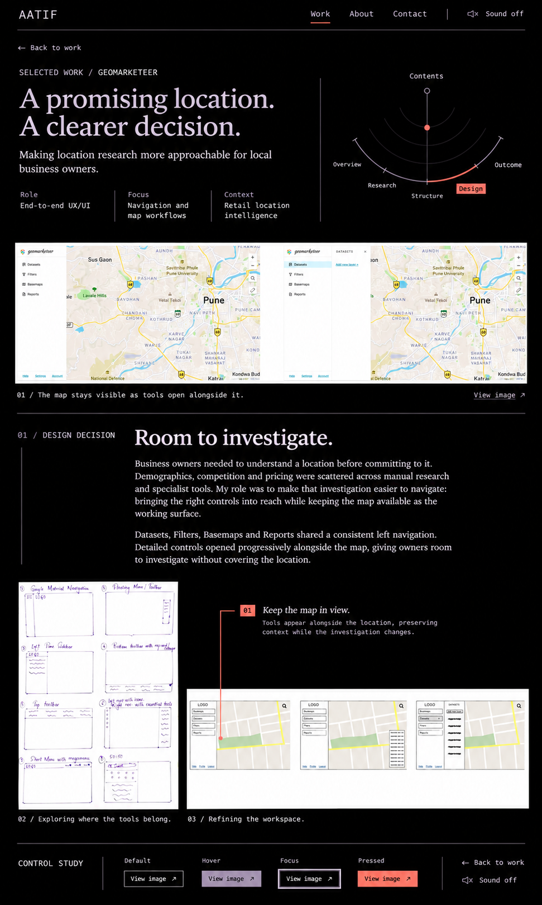
Making components and design-system governance part of delivery.
Designing audio and motion systems to improve perception and feedback.
Aligning product direction with long-term platform thinking.
Turning dated workflows into cohesive digital experiences.
How taste grows through repetition, critique, and shipping imperfect work.
On removing friction inside teams and designing clarity into decisions.
Taking the time to revisit an idea can build trust and a better product.
How small interface decisions add up to lasting changes in behavior.
Systems thinking changed how I approach product complexity and where I look for leverage.
The emphasis on diagnosis and focus reframed how I think about roadmaps.
A reminder to make the next step clear when designing an interaction.